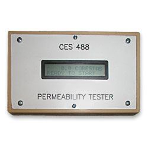

Low Flow Permeability Tester (CES 488)
Features:
- Quick and accurate, low flow, permeability readings for any paper or fabric.
- Ultra Low Range: 0.2 - 60 Corestas or 0.2 - 60 cc / min.* Custom Engineering Units also available.
- Proprietary "Smart Autozero" technology ensures maximum accuracy while extending your units life span.
- RS-232 PLC & Computer interface
- NIST Traceable Flow element
*= (assuming ΔP 1 centibar over a 1 cm2 area).
Description:
The CES 488 Low Flow Permeability Tester was designed to provide an accurate reading of the air flow through various types of paper and fabrics. Air is drawn through the paper in such a manner to ensure that a differential pressure of 1 centibar is across the paper when the flow is read.
The CES 488 uses a proprietary control algorithm that insures that the head pressure is maintained at 1 centibar. The controller was optimized to insure fast and accurate readings without requiring user adjustments.
The CES 488 provides the user with all the necessary signals to make the actual flow calculations with a user provided PC or PLC. This allows the user to manipulate the data as needed for data logging, product profiling, or report generation.
Similar / Complimentary Products::